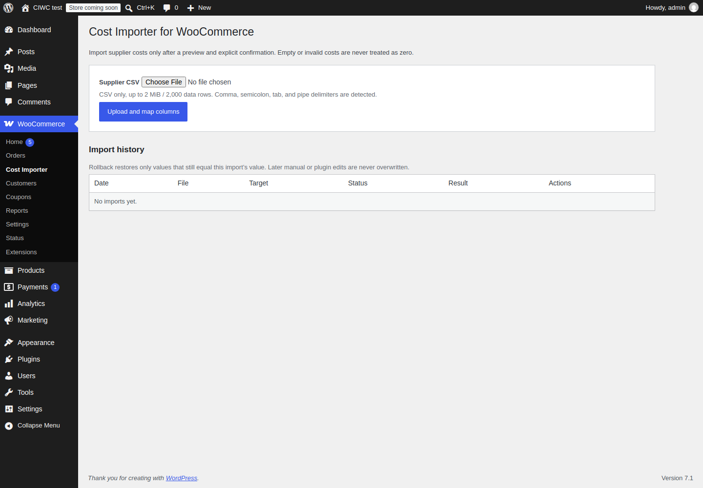
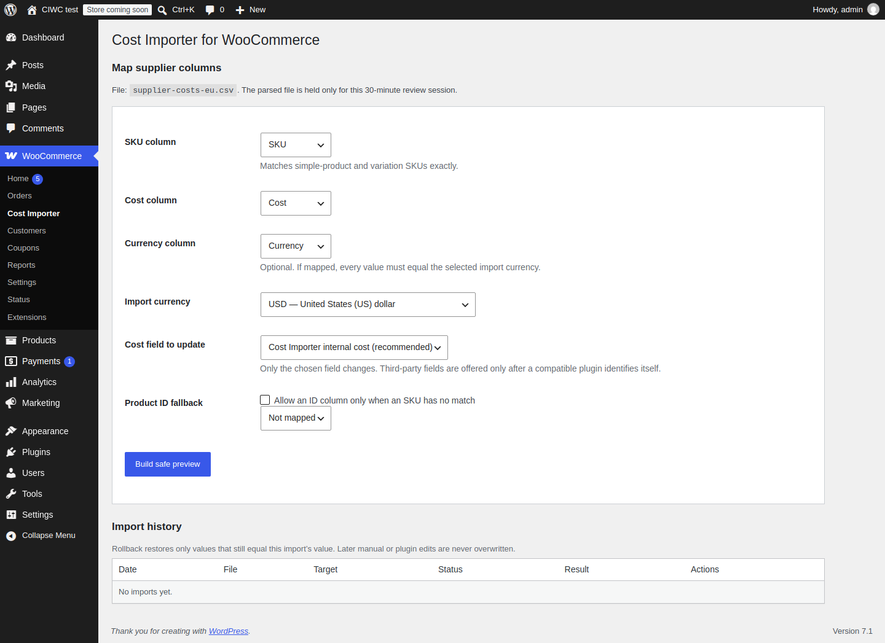
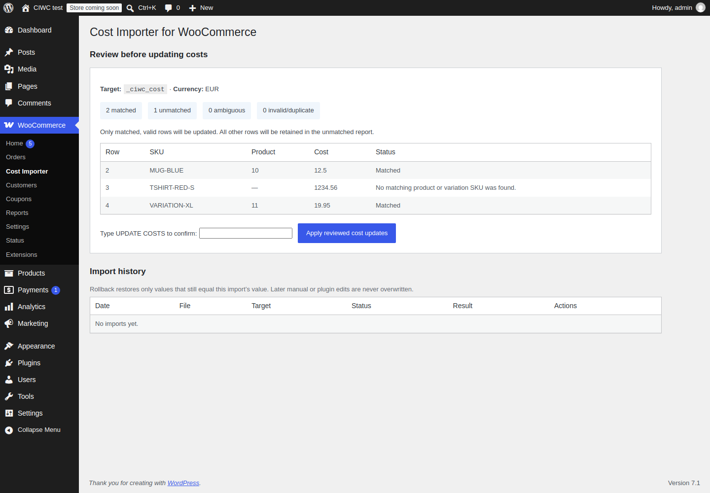
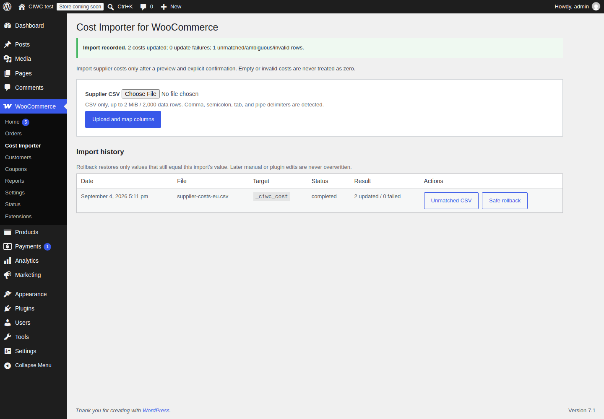
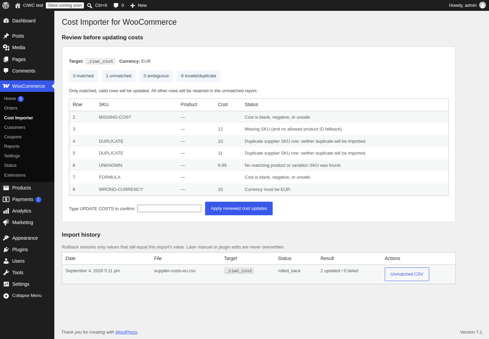

Supplier-ready CSV
EU and US decimals, header detection, column mapping, and a reviewable file-size limit.
WooCommerce supplier-cost imports
Map a supplier CSV, match product and variation SKUs, inspect every outcome, then make the update only when you type the confirmation.
GPL-compatible · no telemetry · no license server · no monthly infrastructure cost
One narrow job, done carefully
Comma, semicolon, tab, and pipe CSVs are detected. Map SKU, cost, and optional currency yourself.
Duplicate, malformed, ambiguous, unmatched, and currency-mismatched rows are excluded—never converted to zero.
Only matching, valid rows are written after you type UPDATE COSTS.
Download unmatched rows, inspect import history, and roll back only unchanged values.
What’s included in free
EU and US decimals, header detection, column mapping, and a reviewable file-size limit.
Exact SKU matching covers simple products and product variations. Product IDs are an optional, explicit fallback.
Default internal cost storage keeps third-party metadata untouched. A compatible plugin must identify its own target.
Unmatched reports guard against CSV formula injection. No supplier data is sent off-site.
Real interface screenshots
These screens come from the reproducible clean WordPress + WooCommerce browser test using synthetic products and supplier data.





Potential Pro, not a paywall
Possible Pro additions include saved supplier profiles, background/large-file imports, scheduled imports, comparison reports, email reports, and longer history. The free CSV → map → preview → safe update → unmatched report workflow remains complete on its own.
Planned Pro pricing
Pro is not for sale yet. These prices apply only after the listed Pro features and a protected delivery flow are ready. Applicable taxes are calculated at checkout.
Introductory
€4.99
One-time early-adopter purchase. The exact included features are stated on the checkout page at launch.
Ongoing updates
€9.99/year
One site, yearly access to future Pro updates and support once those features are available.
FAQ
No. Cost Importer works independently and defaults to its own internal cost field.
Nothing from your supplier CSV. The optional WordPress update check reads public GitHub release metadata over HTTPS without a token.
No. It changes only the cost field selected in the preview, only for valid matched rows, after confirmation.
Email kristijan.kopacevic.ilr@gmail.com with a synthetic/redacted CSV and reproducible steps. Do not send real supplier data.